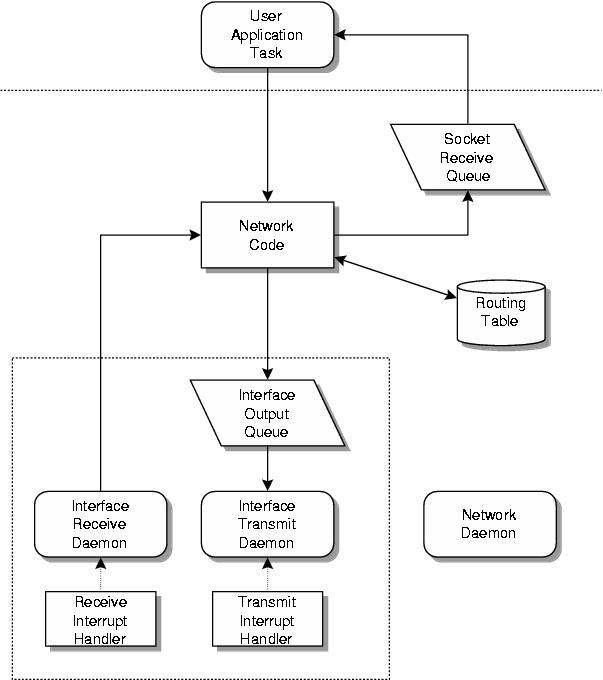

RTEMS Network Supplement
RTEMS Network Supplement
A schematic diagram of the tasks and message mbuf queues in a simple RTEMS networking application is shown in the following figure:
The transmit task for each network interface is normally blocked waiting for a packet to arrive in the transmit queue. Once a packet arrives, the transmit task may block waiting for an event from the transmit interrupt handler. The transmit interrupt handler sends an RTEMS event to the transmit task to indicate that transmit hardware resources have become available.
The receive task for each network interface is normally blocked waiting for an event from the receive interrupt handler. When this event is received the receive task reads the packet and forwards it to the network stack for subsequent processing by the network task.
The network task processes incoming packets and takes care of timed operations such as handling TCP timeouts and aging and removing routing table entries.
The `Network code' contains routines which may run in the context of the user application tasks, the interface receive task or the network task. A network semaphore ensures that the data structures manipulated by the network code remain consistent.


 RTEMS Network Supplement
RTEMS Network Supplement
Copyright © 1988-2008 OAR Corporation